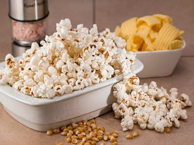

|  |
Food's name: Popcorn▸ Ingredients:
▸ Time to prepare: 40 minutes ▸ Approx quantity: servings for 2 people |
▸ Detailed recipe:
Step 1: Make popcorn:
- Put 3 tablespoons of vegetable oil in the pot. Use a pot or pan with a lid with holes in it to let the steam out during the roasting process.
This keeps the popcorn from getting chewy.
- Turn the heat to medium and drop two corn kernels into the pot to test the heat. When the corn kernels begin to pop, the oil is hot
enough, add the rest of the corn.
- Add the number of seeds suggested on the bag to the pan and cover with the lid. If the pot lid doesn't have a hole, keep it slightly ajar.
- Gently shake the pan to keep the corn kernels from burning.
- When the corn stops popping, turn off the heat. Wait a few seconds for the last kernels to pop, and then remove the cap to prevent steam
from softening the kernels.
Step 2: Making butter coats:
- Put the pot on the stove, reduce heat, then add sugar and about 5ml of water, stir well. Cook until the sugar melts and turns brown.
While cooking, use chopsticks to stir, or else the sugar will burn.
- Put the prepared amount of butter in the pan with a little water, continue to stir until the butter is completely melted, and then turn down
the heat. Now you have a mixture of sugar - butter with the color of cockroach wings. Pour all the popcorn into the pot, stir for 3-4 minutes
to let the corn kernels absorb the butter-sugar mixture.
=> So the popcorn is done, now turn on the TV, open the movie and enjoy it.
▸ Calories and related information: